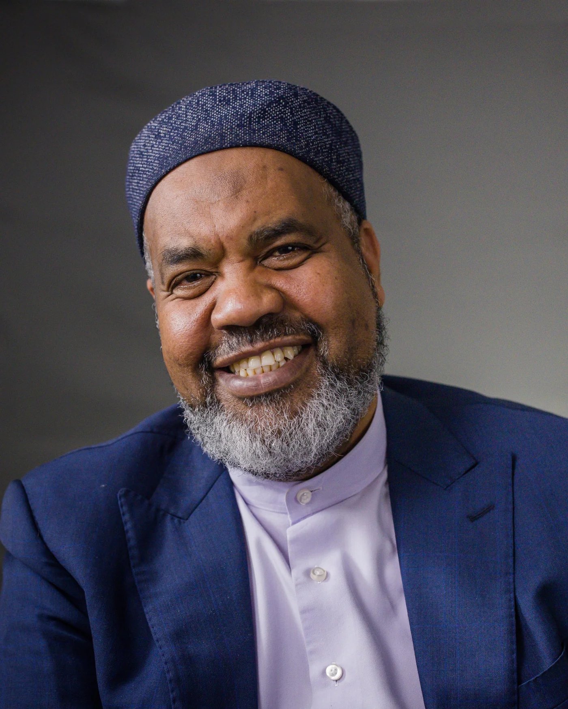

LISTEN
◉
THE QUR'AN · CONVERSATIONPODCAST SERIES
Quran Conversations
Conversations on Qur'anic themes featuring Imam Mohamed Magid.
Explore original source ↗Discover the journey, teachings and contributions of Imam Mohamed Magid — from his early life in Sudan to decades of service to communities in America and around the world.

Raised in Sudan in a family shaped by scholarship and service, Imam Mohamed Magid went on to become a trusted teacher and community leader in the United States.
His story connects the study of faith with a lifelong commitment to education, service, understanding, and building strong communities.
Explore the life timeline ↗Early life and scholarly foundations along the Nile.
Arrival in the United States and a new chapter.
Begins his longstanding service at ADAMS Center.
Elected president of the Islamic Society of North America.
Historical details are drawn from public institutional sources; a full chronology requires Imam Magid's review. Source: Georgetown Berkley Center ↗
Explore a growing collection of lectures, articles, conversations, and reflections across the themes that matter most.
A curated home for authentic public recordings, interviews and publications. Browse the initial source collection below.
Conversations on Qur'anic themes featuring Imam Mohamed Magid.
Explore original source ↗His personal reflections on early life, scholarship and leadership.
Read interview ↗Find teachings, sermons and community programming at the original source.
Visit video archive ↗His work extends beyond the classroom to community leadership, interfaith understanding, and public service.
Learn about his leadership ↗Islamic education and community leadership
National Muslim community leadership
Interfaith dialogue and peacebuilding
Religious freedom and international engagement
A place for upcoming public appearances and a lasting record of past gatherings. These examples link to the event organizers.
The full vision is a carefully researched, bilingual archive of original lectures, milestones, photographs, publications, and stories — preserving the context of a life of service.
This prototype shows the design direction and selected source material. The complete historical archive, translations, photo permissions and editorial approvals are future project phases.
An invitation to discover, preserve and share the work of Imam Mohamed Magid.
Contact information pending approval